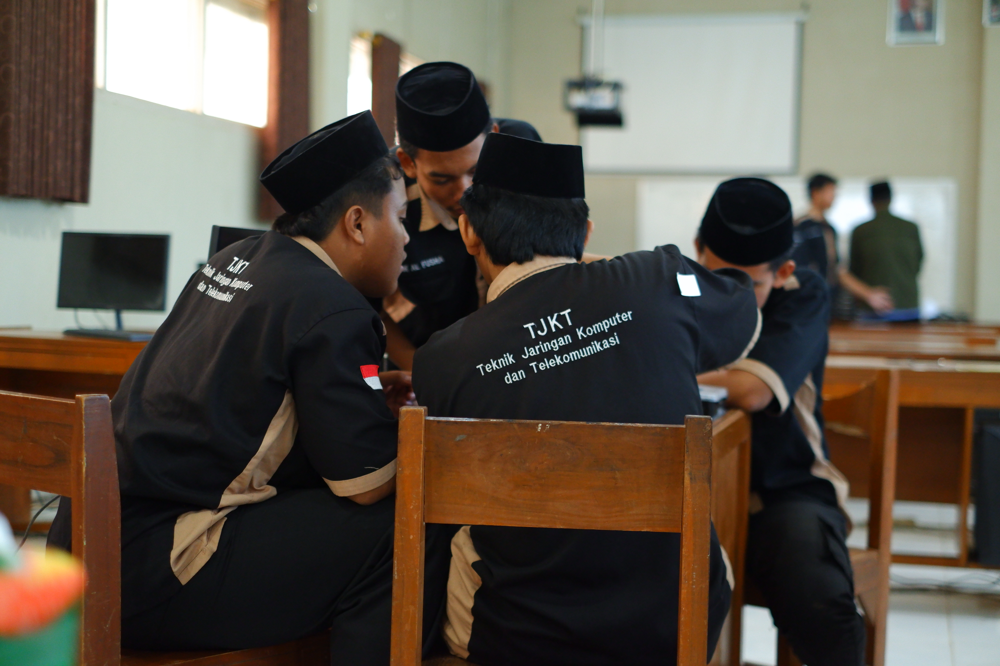
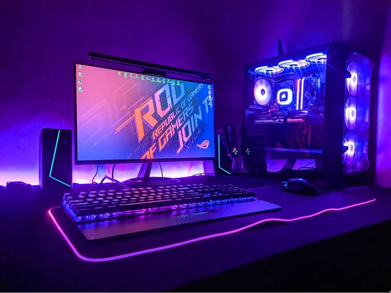

Apa itu Jurusan TKJ? Pengertian dan Ruang Lingkup Pembelajaran

Teknik Komputer dan Jaringan (TKJ) merupakan salah satu kompetensi keahlian yang sangat populer di jenjang Sekolah Menengah Kejuruan (SMK). Jurusan ini berfokus pada pemahaman mendalam mengenai teknologi informasi, perakitan perangkat keras komputer, instalasi perangkat lunak, serta perancangan dan pengelolaan jaringan komputer.
Di era digital yang berkembang sangat pesat saat ini, lulusan TKJ menjadi salah satu yang paling banyak dicari oleh perusahaan. Hal ini dikarenakan hampir seluruh lini industri kini mengandalkan infrastruktur jaringan dan komputer untuk operasional sehari-hari mereka.
Ruang Lingkup Pembelajaran Jurusan TKJ
Selama menempuh pendidikan di jurusan ini, para siswa tidak hanya belajar teori saja, melainkan lebih banyak melakukan praktik langsung di laboratorium. Berikut adalah beberapa ruang lingkup materi utamanya:
- Dasar Desain Grafis & Pemrograman: Memahami logika dasar komputer serta estetika visual.
- Perakitan Komputer: Belajar mengenal komponen hardware, merakit PC, serta melakukan troubleshooting (perbaikan) kerusakan.
- Sistem Operasi: Instalasi dan konfigurasi OS berbasis GUI maupun CLI (seperti Windows dan Linux).
- Jaringan Dasar: Mempelajari pengabelan (Crimping LAN), konsep IP Address, dan subnetting.
- Administrasi Infrastruktur Jaringan: Mengonfigurasi perangkat keras jaringan tingkat lanjut seperti Router (MikroTik/Cisco), Switch, dan Access Point.
Prospek Kerja Lulusan
Lulusan dari kompetensi keahlian Teknik Komputer dan Jaringan memiliki peluang karier yang sangat luas, di antaranya menjadi Network Engineer, IT Support/Teknisi Komputer, System Administrator, hingga Network Administrator di berbagai instansi pemerintah maupun swasta.
TKJ harus memiliki pemikiran kritis? kenapa si? dan apa alasannya?.

alasan Kenapa TKJ Harus Berfikir Kritis.
Anak TKJ (Teknik Komputer dan Jaringan) wajib berpikir kritis karena mereka berurusan dengan sistem yang kompleks. Kemampuan ini sangat penting untuk menganalisis masalah jaringan (troubleshooting), mengambil keputusan cepat saat server down, dan melindungi keamanan data dari ancaman siber yang selalu berkembang.
- Efisiensi Troubleshooting: Saat jaringan bermasalah, berpikir kritis membantu Anda melacak akar masalah secara sistematis (dari layer fisik hingga software), bukan sekadar menebak-nebak.
- Keamanan Siber (Cybersecurity): Mengidentifikasi celah keamanan dan membedakan antara aktivitas normal dan serangan hacker membutuhkan analisis yang tajam.
- Pengambilan Keputusan Tepat: Memilih perangkat, topologi jaringan, atau konfigurasi server yang paling sesuai dengan kebutuhan dan bujet perusahaan memerlukan evaluasi logis.
- Adaptasi Teknologi Baru: Dunia IT berkembang sangat cepat. Kemampuan ini membuat Anda mudah beradaptasi, mengevaluasi, dan menguasai tools baru secara mandiri.
Apakah Anda sedang mengalami kendala saat menganalisis kerusakan jaringan atau sedang merancang topologi tertentu? Jelaskan masalah yang sedang Anda hadapi agar kita bisa mencari solusinya bersama.
Mengenali Materi tentang TJKT

Perakitan PC adalah proses memasang dan menghubungkan berbagai komponen komputer agar dapat bekerja dengan baik.
Komponen utama yang digunakan antara lain motherboard, CPU/processor, RAM, HDD/SSD, power supply, dan casing nah yg di bawah ini alat alat lainnya dan juga artinya
- Processor (CPU) : otak komputer yang memproses data.
- Motherboard : papan utama tempat komponen terhubung.
- RAM : menyimpan data sementara saat komputer berjalan.
- HDD / SSD : menyimpan sistem operasi, aplikasi, dan file.
- Power Supply (PSU) : memberikan listrik ke seluruh komponen.
- VGA/GPU : : mengolah tampilan/grafis ke monitor.
- Heatsink & Fan : mendinginkan processor dan komponen.
- Sound Card : mengolah suara, biasanya sudah terintegrasi di motherboard.
- LAN Card/NIC : menghubungkan PC ke jaringan, biasanya juga sudah terintegrasi.
- Baterai CMOS : menyimpan pengaturan BIOS dan waktu computer.
- Case/Casing: melindungi dan menjadi tempat komponen PC.
Tinggalkan Balasan
Alamat email Anda tidak akan dipublikasikan. Kolom yang wajib diisi ditandai dengan *